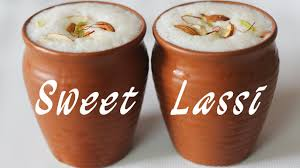

Buutter Chiicken
A sweet flatbread stuffed with a mixture of jaggery and split gram (chana dal), typically served during festivals.
Sarson da Saag and Makki di Roti
Sarson da Saag and Makki di Roti are quintessential dishes from Punjab, celebrated for their rich flavors and wholesome ingredientsChole Bhature
Chole Bhature is a beloved North Indian dish, especially popular in Punjab. It features spicy chickpeas (chole) served with deep-fried bread (bhature).
